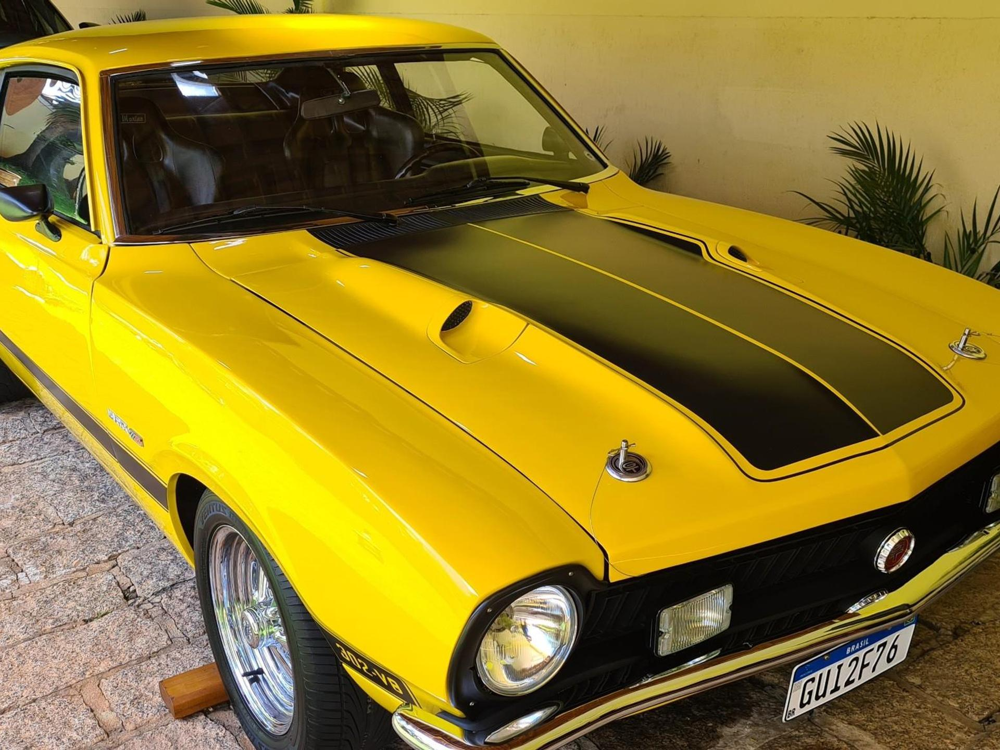
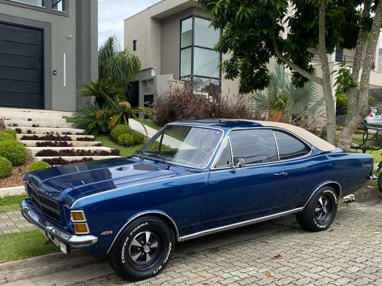
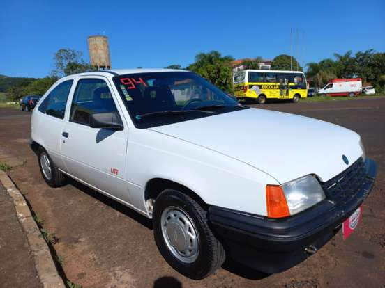
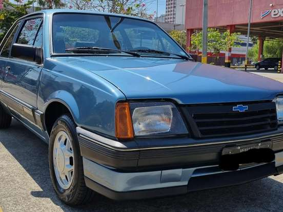
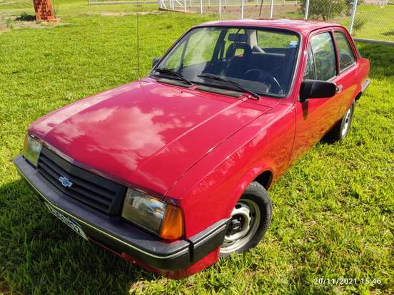
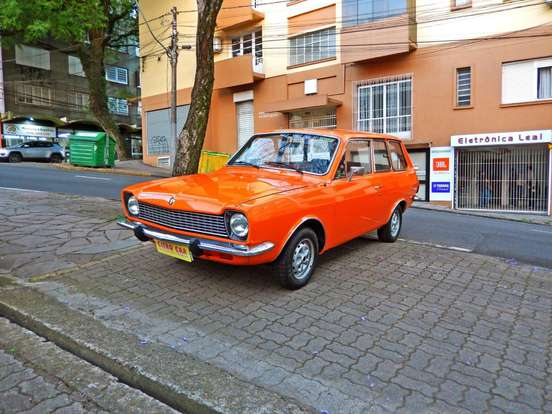
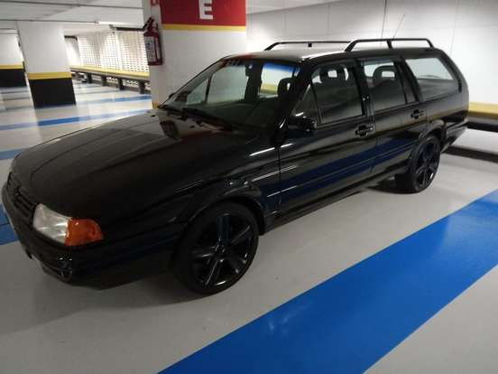
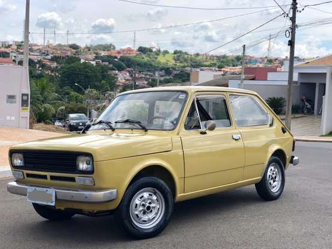
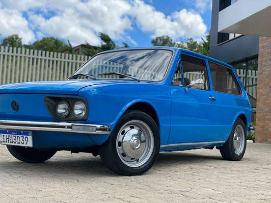

Maverick GT
A Ford investiu em um motor V8 diferenciado para o Maverick, introduzindo o motor de 302 polegadas, potência de 199 hp (bruta) e 4.950 cilindradas cubicas, somente com câmbio manual de quatro marchas e acionamento no assoalho. Sua aceleração de 0 à 100 km/h era feita em aproximadamente 11 segundos. Contava com travas externas no capô, faróis auxiliares, bancos individuais com assento mais baixo, conta-giros sobrepostos à coluna de direção do volante, rodas de 14” e pneus Firestone Wide.
Link para compra do veículo: Maverick GT.

Chevrolet Opala
Apresentado em 1968, já como linha 1969, o Chevrolet Opala tinha duas versões de motor, que vieram emprestados do Chevrolet Impala. Um 3.8 litros com seis cilindros em linha com possantes 125 cavalos. O outro, um 2.5 litros, dessa vez com quatro cilindros em linha desenvolvia bons 80 cavalos. A primeira versão do Opala, vinha na carroceria sedã de quatro portas, com versões Standart e Luxo. As belas linhas do modelo, vindas do Opel Rekord, reforçavam a da linha de cintura ondulada dos para-lamas traseiros. O estilo “garrafa de Coca-Cola” no perfil lateral, estava em alta na época por sua adoção no Corvette de 1968. Os faróis circulares (não ovalados, como os do Opel Rekord) vinham incrustados em uma grade de muitos frisos horizontais cromados, e as luzes de direção, abaixo do para-choque. Na traseira, uma bela faixa frisada, levava o nome da Chevrolet em fonte cursiva, dando muito mais charme e autenticidade ao modelo com nome de pedra preciosa.
Link para compra do veículo: Chevrolet Opala.

Chevrolet Kadett
O Chevrolet Kadett foi um dos carros mais importantes da General Motors em sua transição de um portfólio antigo e ultrapassado para algo moderno e em sintonia com o mundo, mais precisamente com a Alemanha. Tendo o último lançamento da GMB ocorrido em 1984 com a série 20 de picapes (A20, C20 e D20), assim como um ano antes com o icônico Monza, o Kadett foi o primeiro sinal de mudança para a Chevrolet no Brasil e antecipou o que vinha pela frente. Fruto de design e engenharia dos alemães, o modelo era a quinta geração de um produto da Adam Opel AG, que existiu aqui em sua terceira geração (C), conhecido como Chevrolet Chevette. Mesmo com 5 anos de atraso aqui, ele trouxe um novo ar. Lançado em 1989, com direito a caixa de ferramentas como presente para a imprensa, o Kadett nem de longe foi um problema para a GMB, pelo contrário, foi uma oportunidade de expandir sua atuação no mercado.
Link para compra do veículo: Chevrolet Kadett.

Chevrolet Monza
Com o Opel Ascona debutando no mercado europeu, a General Motors do Brasil já estava com tudo pronto para lançar seu equivalente “made in Brazil”, fruto de testes que começaram ainda no final dos anos 70 sob a carroceria do Opel Kadett C, que era o nosso Chevette, sendo o alemão o último carro pequeno da marca com tração traseira. Mas, para a GMB, havia um problema com o Ascona, seu nome. Associado com “asco” (nojo), o nome não cairia bem entre os brasileiros e tudo o que a empresa queria era evitar a repulsa dos clientes. Assim, a escolha (mais óbvia, por sinal) foi utilizar o nome do enorme cupê da Opel, o Monza. E foi com ele que a Chevrolet anunciou aos quatro cantos do país o novo carro em abril de 1982. Chevrolet Monza. Agora o novo carro chegava ao mercado brasileiro e sem qualquer associação com o americano, que havia saído de linha no ano anterior e sem mencionar jamais o nome Ascona. Mas, de fato, era o Opel mais recente que chegava ao Brasil, um feito pela terceira vez na história da GMB. Ele também foi o primeiro carro de tração dianteira da Chevrolet no mercado.
Link para compra do veículo: Chevrolet Monza.

Chevrolet Chevette
O Chevette chegou ao Brasil, pelas mãos da Chevrolet, em 1973. O modelo foi derivado da quarta geração do Opel Kadett, lançado na Europa durante o Salão de Frankfurt daquele ano. A ideia da marca era apresentar um produto inovador, e isso foi levado tão a sério que o Chevette teve uma detalhe bem interessante: seu lançamento foi feito primeiro no Brasil, depois na Europa (com diferença de seis meses).O nome, segundo alguns, queria dizer algo como “pequeno Chevrolet”. A rejeição à nomenclatura europeia (Kadett, ou cadete) surgiu por um temor da GM, que não queria fazer associação com o governo militar, presente por aqui na época. Não existe uma confirmação oficial por parte da montadora, mas o fato é que o nome Chevette acabou sendo marcante para o cenário automotivo nacional.
Link para compra do veículo: Chevrolet Chevette.

Ford Belina
Notando o enorme sucesso que o Ford Corcel 1 estava fazendo, a Ford decidiu que iria investir mais na linha e iria expandir a família com uma perua chamada Belina. O projeto que nasceu em conjunto com a Renault resultou inicialmente no Corcel de quatro portas e posteriormente no cupê, e então ganhou um novo membro em março de 1970, a Belina, uma perua com vocação familiar e espaço de sobra para os padrões da época. A Ford Belina tinha um excelente espaço interno e conforto de carro de categoria superior, apesar do modelo ser oferecido apenas com três portas (nunca chegou a ter cinco portas).O motor no começo era o mesmo do Corcel, o 1.3 litro de 68 cavalos. Esse motor com certeza era pouco considerando-se o peso total de uma Belina carregada com cinco pessoas mais bagagem. Mas fora esse pequeno percalço, a Ford Belina alinhava conforto ao rodar, silêncio a bordo e uma boa autonomia com um tanque de combustível, que tinha sido aumentado de 51 litros no Corcel para 63 litros na Belina.
Link para compra do veículo: Ford Belina.

Volkswagen Quantum
A Quantum foi uma station wagon produzido pela Volkswagen de 1985 até 2003 no Brasil. Ela também era chamada de Santana Quantum em alusão ao sedan do qual se derivou. Ambos eram as versões brasileiras da segunda geração do Volkswagen Passat alemão, que ao contrário da primeira, chegou ao país sem manter o nome original. Sua primeira aparição no país era de um modelo quase idêntico ao alemão, diferindo somente em adaptações regionais quanto à mecânica. Seu lançamento foi recheado de expectativas por compor com o Santana a primeira linha de luxo da VW no país, e na verdade ela acabou recebendo índices de vendas bem expressivos. Afinal era um projeto bem novo, que oferecia doses de luxo quase no nível da principal rival, Chevrolet Caravan, mas com todas as vantagens de ser muito mais moderna que esta: a concepção de motor e tração dianteiros não roubava excesso de espaço interno e portanto não requeria comprimento total exagerado
Link para compra do veículo: Volkswagen Quantum.

Fiat 147
O primeiro modelo a estrear a planta da Fiat fora de Turim foi o Fiat 147 na planta de Betim em Minas Gerais. Mas não foi só o Fiat 147 que sacudiu o mercado, a Fiat também mostrou a que veio, instalando sua maior fábrica fora do eixo Rio-São Paulo. A fábrica começou a operar com força máxima em 9 de julho de 1976, com o Fiat 147 como carro chefe da Fiat no Brasil. Segundo relatos da própria Fiat, o Fiat 147, rodou mais de um milhão de quilômetros, para assegurar que sua estrutura era boa e de qualidade. Durante o Salão do Automóvel de São Paulo de 1976, a fiat montou do lado de fora do Parque de Exposições do Anhembi, uma pista com cerca de 300 metros para que curiosos pudessem testar a novidade da Fiat. Tinham cerca de 15 unidades de várias cores com técnicos da Fiat a bordo para levar os visitantes do Salão para conhecer a nova arma da Fiat.
Link para compra do veículo: Fiat 147.

Volkswagen Brasilia
O ano de 1973 foi marcante para os brasileiros apaixonados por carros. No mesmo período em que era lançado o VW Brasília, tínhamos a estreia do Chevrolet Chevette, do Ford Maverick e do Dodge 1800. Desde 1970, a Volkswagen já estava trabalhando num modelo compacto. O projeto de criação do VW Brasília foi um pedido do então presidente da Volkswagen do Brasil, Rudolph Leiding. O carro nasceu de um sonho. O lançamento do Brasília era um desejo de Leiding. O executivo, que depois passou a gerenciar a empresa globalmente, havia pedido aos engenheiros da marca por um novo carro para suceder o Fusca. Leiding, então, solicitou um veículo com a mesma plataforma do Fusca, com estilo “premium” e mais espaçoso. Não à toa ele chegou para ser uma opção mais cara do Fusca. Curiosamente, Rudolph Leiding acabou nem vendo seu projeto final nas ruas brasileiras, uma vez que passou a presidir a empresa globalmente.
Link para compra do veículo: Volkswagen Brasilia.
